Vorwort
Die Cybrans sind die zweite der drei Fraktionen, welche es in Supreme Commander 2 zu spielen gibt. Sie verkörpern die »Rasse« einer auf der Erde lebenden Bevölkerung. Die Fraktion ist darüber hinaus besonders durch ihre besonderen Features (später genannt) als Supporter anzusehen. Besonders durch das amphibientypische Verhalten, indem sich Landeinheiten auch im Wasser fortbewegen können sind sie besonders auf Maps mit einem großen Wasseranteil sehr stark. Die Erleuchteten sind die dritte der drei Fraktionen, welche es in Supreme Commander 2 zu spielen gibt. Sie verkörpern die nicht menschliche »Rasse« im Spiel. Die Fraktion ist darüber hinaus besonders durch ihre besonderen Features im späteren Verlauf einer Partie (später genannt) als keine Einsteigerfraktion zu betrachten. Doch anders als bei der UEF, braucht es deutlich mehr Zeit, bis man als Spieler jeden Kniff heraushat und die Fraktion suffizient nutzen kann.Kampagne
Um Spoiler zu vermeiden wird die Kampagne nur im groben Überblick geschildert!Strebend nach Freiheit, bekämpft man anfangs seine eigenen Leute und dessen Verbündete, gerät dann jedoch in einen Konflikt mit deren Handlungsweisen, sodass man die Seite wechselt.
Überblick
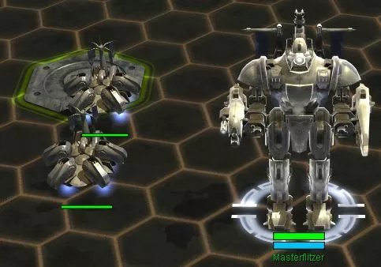 Im Multiplayer-Modus startet jeder Spieler immer mit zwei Technikern und seiner Kommandozentrale (kurz ACU) samt eines eigenen »Aufbauplatzes« inklusive 4 Masseablagerungen. So kann eine Grundlegende Versorgung hergestellt werden und es kommt zu keiner ungerechten Verteilung der Ressourcen.Basis Einheiten
ACU
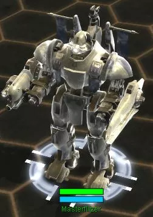 Die ACU (Armored Command Unit) ist die vom Spieler bemannte Kommandoeinheit. Sie ist vergleichbar mit der Größe eines Hochhauses, obwohl die Ingame-Maßstäbe schwer mit der Realität zu vergleichen sind. Von ihr aus wird der Anfang gesteuert und koordiniert, nicht zuletzt, da sie folgende Vorzüge aufweist:- Grundlegende Bewaffnung mit Explosiv-, MG- und Anti-Air-Geschützen
- 50% beschleunigtes Bautempo
- Rettungskapsel (Kopf absprengbar) als letzte Fluchtmöglichkeit
- Weitere erforschbare Features
- Bau aller Gebäude
Techniker
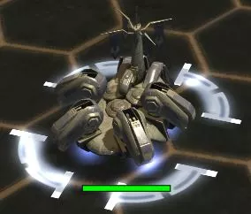 Der Techniker ist eine multifunktionelle Einheit, welche besonders für den Gebäudebau zuständig ist. Im Gegensatz zur ACU kann sie Gebäude langsamer bauen und hat weitaus weniger Special Features.Die Einheit kann in jeder normalen Fabrik gebaut und die somit die Anzahl der Techniker erweitert werden.
Land Einheiten
- Harvog Sturmbot: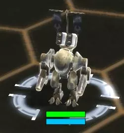 Der Harvog Sturmbot ist eine Einheit, die der ACU Kommandoeinheit sehr ähnlich sieht. Sie verfügt über zwei Beine und kann sich so fortbewegen. Besonders punktet der Harvog mit seiner Möglichkeit sich zu teleportieren, welche einen enormen Kampf Vorteil bringt. Die Einheit ist teurer also bei den anderen Fraktionen, dafür ist die Einheit stabiler und stärker.
- Yenzoo Panzer: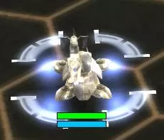 Er ähnelt dem Panzer der UEF, jedoch teilt dieser mehr schaden als der Rockhead aus. Dafür sind seine Produktionskosten höher.
- Crahdow: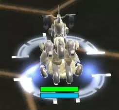 Der Crahdow ist eine mobile Luftabwehr. Alleine hat sie jedoch sehr geringe Chancen gegen Feindliche Jäger zu bestehen. Diese Einheit wird erst in einer Gruppe tödlich.
- Fistoosh Raketenwerfer: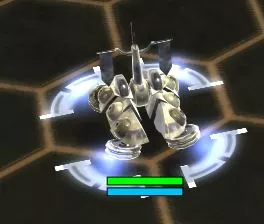 Diese Einheit ist eine Art mobile Artillerie. Sie kann Feindliche Gebäude und Einheiten zerstören, ohne selbst beschossen zu werden. Jedoch sollte sie nie alleine kämpfen.
- Shotja Scharfschützenbot: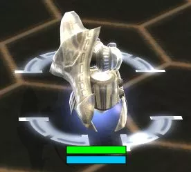 Der Shotja ist sozusagen eine One-Man-Army. Er hat eine lange Nachladezeit, nimmt dafür Einheiten mit ein bis zwei Schüssen auseinander.
- Bodaboom: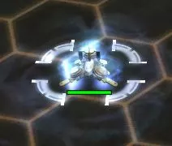 Der Bodaboom ist eine mobile Verstärkungseinheit, welche jeder Einheit einen Schildbonus gibt. Sie ist der Ersatz für den mobilen Schildträger, welchen es bei den Erleuchteten nicht gibt.
- Sliptack: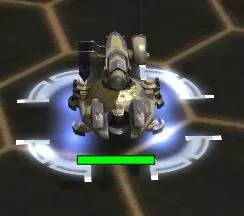 Der Sliptack ist eine mobile Raketenabwehr, welche nur in Kombination mit anderen Einheiten effektiv ist, da sie sich selber nicht verteidigen kann.
Luft Einheiten
- Weedoboth: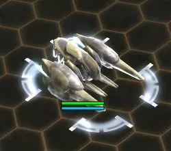 Das Weedoboth kombiniert Jäger und Bomber effektiv in einem. Seine Stärke zeigt sich besonders im sogenannten Mann gegen Mann Kampf. Jedoch hat diese Stärke auch einen Preis. Denn der Weedoboth kostet erheblich mehr als seine Konkurrenten.
- Vulthoo: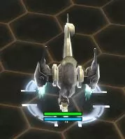 Das Vulthoo Gunship hat seine Stärke definitiv im Kampf gegen bodengebundene Infanterie und Fahrzeuge. Allerdings ist das Gunship extrem anfällig für Luftabwehr und kann so außergewöhnlich schnell zerstört werden. Es ist daher nur gegen vorrückende Truppen und nicht gegen feste Basen einzusetzen.
- HeeHola: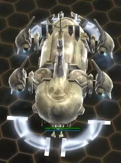 Das HeeHola ist ein leichtes Transport-Shuttle welches für den Infanterietransport benutzt wird. Es kann insgesamt 25 Einheiten oder für die schnelle Evakuierung einer ACU, welche in diesem Falle den Platz von 15 Einheitenslots verbraucht, genutzt werden. Der Transporter kann sich nur schwer gegen Boden-Luft- oder Luft-Luft-Abwehr wehren und benötigt daher meistens anderweitigen Schutz. Außerdem kann eine Fährverbindung hergestellt werden, bei der der HeeHola eigenständig Einheiten aufnimmt und an dem zugewiesenen Platz abliefert.
Prototypen
- Wilfindja: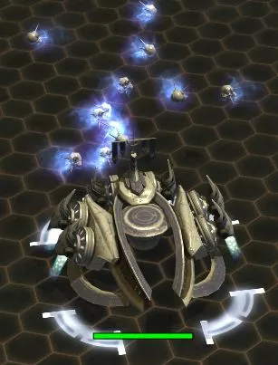 Der Wilfindja ist die einzige offizielle Anti-Marineeinheit der Erleuchteten. Er besitzt die Fähigkeit über Land zu schweben und auch Landeinheiten anzugreifen.
- Urchinow: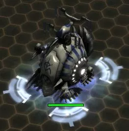 Der Urchinow ist ein Landprototyp, welcher gegen einen Verband mehrerer Bodeneinheiten eingesetzt wird. Er ist allerdings nicht in der Lage sich gegen Lufteinheiten zu verteidigen.
- Airnomo: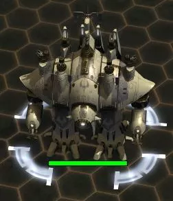 Der Airnomo ist eine riesige, mobile Luftabwehr, welcher sehr effektiv gegen Standard- sowie Prototypeinheiten ist.
- Darknoid: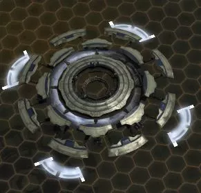 Der Darknoid teilt gewaltigen Flächenschaden aus. Er ist jedoch recht schwer zu kontrollieren, da er ein komplexes Angriffsmuster hat. Ebenso ist er recht anfällig und hat keine Luftverteidigung.
- Galaktischer Koloss: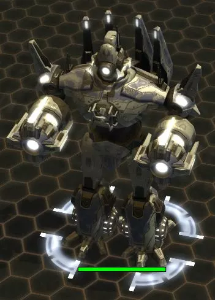 Der Galaktische Koloss ist ein riesiger Roboter, welcher mit seinem Laserstrahl verheerenden Schaden über Zeit macht. Er zieht ebenso kleinere feindliche Einheiten an und wirbelt sie durch die Luft.
- Sooprizer: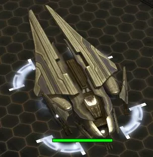 Dieses riesige Gunship, welches effektiv gegen Verbände und Gebäude ist, kann sich nicht nur Gut gegen Jäger verteidigen, sondern auch problemlos feindliche Abwehren zerschlagen.
- Pulinsmash: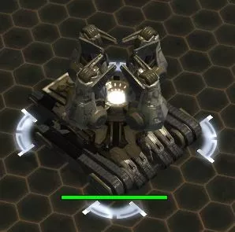 Diese Einheit ist eine Art Supermagnet, welcher Einheiten sowohl anzieht wie auch abstößt. Jedoch ist er sehr langsam und nur auf recht kleinen Karten effektiv.
Gebäude Prototypen
- Erleuchter: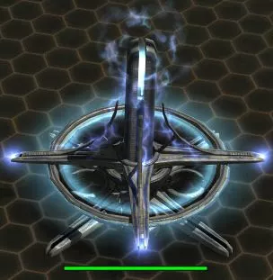 Der Erleuchter ist eine Radarstation, welche es dem Spieler ermöglicht im Austausch für Energie teile der Karte für einen gewissen Zeitraum aufzudecken.
- Raumtempel: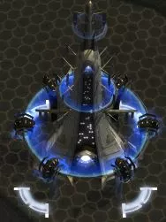 Der Raumtempel, ermöglicht es eine Vielzahl von Einheiten in einem recht großen Radius auf der Karte hin und her zu teleportieren. Besonders effektiv ist er auf kleinen Maps, kann aber auf großen ebenso die Schlacht verändern.
- Loyalistenkanone: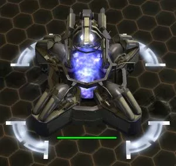 Diese Kanone feuert einen Strahl auf feindliche Einheiten in Reichweite ab und übernimmt somit die Kontrolle über diese. Danach sind sie dem Spieler treu ergeben. Je nachdem ob es eine Standard- oder ein Prototyp-Einheit ist, dauert die Übernahme dementsprechend länger. Gebäude können ebenso übernommen werden.